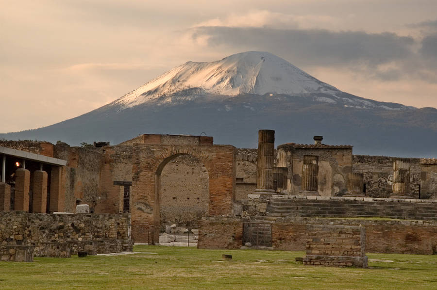

The infamous Italian volcano has erupted more than 50 times over its hundreds of thousands
of years of activity, but no eruption was more earth-shattering than the one that engulfed Pompeii in the year 79 A.D
The deluge of volcanic ash "shrouded the city in a darkness … like the black of closed and unlighted rooms,"
according to one witness, echoing the predictions of Roman philosopher Seneca that the Earth would go up in smoke.
According to the Bible's Book of Revelation, the number 666 is described as the "mark of the beast"
— which put Christian Europeans into a tizzy as the year 1666 approached, according to Time Magazine.
The 1599 plague that ravaged Europe didn't help matters much. Then, on Sept. 2, 1666, a fire started in a
London bakery, destroying more than 13,000 buildings and tens of thousands of homes over the course of three days,
Time reported. However, the disastrous fire claimed only 10 lives: the work of the Devil, perhaps, but not exactly
Earth-ending material.
The arrival of Halley's Comet, named after British astronomer Edmond Halley, wows the Earth every 75 years or so.
However, 1910's arrival of the brilliant star caused more panic than excitement, National Geographic reported, as many
speculatedthat the comet's tail contained a gas "that would impregnate the atmosphere and possibly snuff out all life on
the planet," according to French astronomer Camille Flammarion. In fact, the 1910 comet came especially close to the
Earth, whose orbit carried the comet's 24-million-mile-long tail for six hours on May 19, Wired reported.
A close call, but the planet stayed intact.
In 1984, a computer-trade column warned that a computer calculation error on Jan. 1, 2000 would lead to mass chaos and send machines and technology worldwide grinding to a halt as they reached 00 due to their use of two digits for years (i.e. 98, 99, 00), National Geographic reported."People traded off the natural fears some people have of technology," Tech Republic wrote. "Mix that in with religious fear and fervor of those who were expecting the Second Coming 2,000 years after Christ's birth (even though Jesus was probably born in 2 BC), and there was just more hype to cash in on."Worldwide, people prepared for apocalyptic scenarios and rushed to buy computer software and hardware that would reportedly fix the problem.The acronym TEOTWAWKI (or The End of the World as We Know It) circulated on Y2K prep websites, and conspiracy theories abounded, but in the end, we all made it into the new millennium unscathed.
Contact me at: Matthew.emmerosn@student.hhs.school.nz or ring 0800 838383 if you have any questions